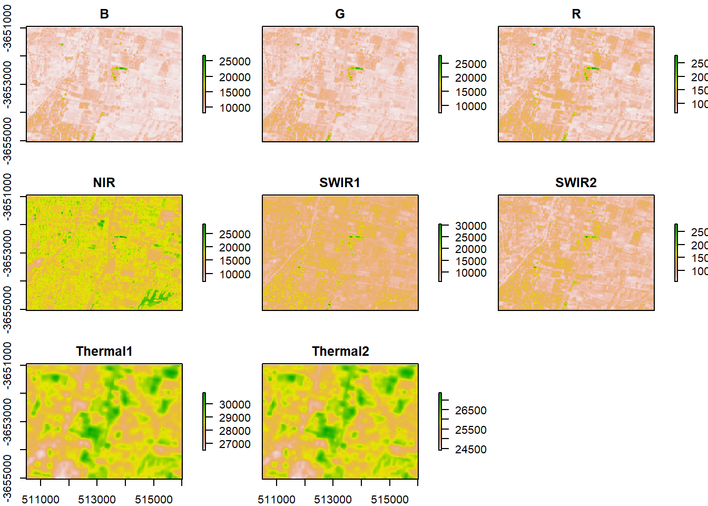
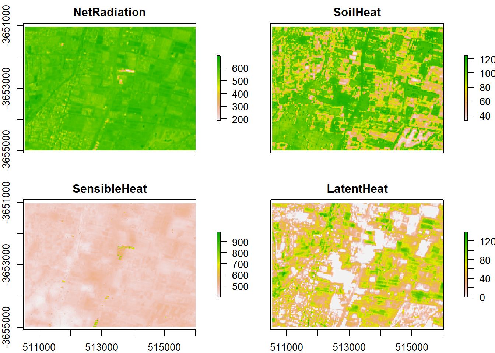

The data provided by Landsat have always been useful in diverse domain such as mineral resources exploration, the evolution of vegetation, the climate change aspect by comparing data from different year,…Landsat is mostly use for Earth Observation and goes from Landsat 1 to Landsat8. Landsat8 has eight band ranging from the visible to the Thermal wavelength. Landsat7 and 8 reveal the surface reflectance of the soil. Lot of image processing algorithm such as Erdas Imagine, Envi, Qgis,.. allow experts to process the Landsat images and extract the information they are looking for. In this project, I intend to use R language to display the energy, i.e the heat, the temperature and the radiation from the Landsat images.
I use Landsat, metric an water datas for this project as well as some supporting data such as sp data, raster data,rgal data.` Since Landsat data are very large in term of size, I firstly cropped my area of interest with the tool call “createAoi()”. This allow me to reduce the computational cost of processing my data. Secondly, to be able to run METRIC with Landsat data, I put my surface reflectance products in the working directory. I listed the content of the water package asa weel as the content of the landsat package.
I finally applied a metric estimation to my selected images and plot the surface energy reflectance.
#Load any required packages in a code chunk (you may need to install some packages):
library(rgdal)## Loading required package: sp## rgdal: version: 1.4-7, (SVN revision 845)
## Geospatial Data Abstraction Library extensions to R successfully loaded
## Loaded GDAL runtime: GDAL 2.2.3, released 2017/11/20
## Path to GDAL shared files: C:/Users/Owner/Documents/R/win-library/3.6/rgdal/gdal
## GDAL binary built with GEOS: TRUE
## Loaded PROJ.4 runtime: Rel. 4.9.3, 15 August 2016, [PJ_VERSION: 493]
## Path to PROJ.4 shared files: C:/Users/Owner/Documents/R/win-library/3.6/rgdal/proj
## Linking to sp version: 1.3-2library(sp)
library(raster)
library(landsat)
library(landsat8)
library(Metrics)
library(water)aoi <- createAoi(topleft = c(350000, -350000), bottomright = c(520000, -3800000))
raw_data_folder <- system.file("extdata", package="water")
image <- loadImage(path=raw_data_folder, aoi=aoi, sat="L8")## Warning in `[<-`(`*tmp*`, i, value = raster(list.files(path = path, pattern =
## paste0(image_pattern, : implicit list embedding of S4 objects is deprecated
## Warning in `[<-`(`*tmp*`, i, value = raster(list.files(path = path, pattern =
## paste0(image_pattern, : implicit list embedding of S4 objects is deprecated
## Warning in `[<-`(`*tmp*`, i, value = raster(list.files(path = path, pattern =
## paste0(image_pattern, : implicit list embedding of S4 objects is deprecated
## Warning in `[<-`(`*tmp*`, i, value = raster(list.files(path = path, pattern =
## paste0(image_pattern, : implicit list embedding of S4 objects is deprecated
## Warning in `[<-`(`*tmp*`, i, value = raster(list.files(path = path, pattern =
## paste0(image_pattern, : implicit list embedding of S4 objects is deprecated
## Warning in `[<-`(`*tmp*`, i, value = raster(list.files(path = path, pattern =
## paste0(image_pattern, : implicit list embedding of S4 objects is deprecated
## Warning in `[<-`(`*tmp*`, i, value = raster(list.files(path = path, pattern =
## paste0(image_pattern, : implicit list embedding of S4 objects is deprecated
## Warning in `[<-`(`*tmp*`, i, value = raster(list.files(path = path, pattern =
## paste0(image_pattern, : implicit list embedding of S4 objects is deprecatedimage.SR <- loadImageSR(path=raw_data_folder, aoi=aoi)## Warning in `[<-`(`*tmp*`, i, value = raster(files[i])): implicit list embedding
## of S4 objects is deprecated## Warning in `[<-`(`*tmp*`, i, value = raster(files[i])): implicit list embedding
## of S4 objects is deprecated
## Warning in `[<-`(`*tmp*`, i, value = raster(files[i])): implicit list embedding
## of S4 objects is deprecated
## Warning in `[<-`(`*tmp*`, i, value = raster(files[i])): implicit list embedding
## of S4 objects is deprecated
## Warning in `[<-`(`*tmp*`, i, value = raster(files[i])): implicit list embedding
## of S4 objects is deprecated
## Warning in `[<-`(`*tmp*`, i, value = raster(files[i])): implicit list embedding
## of S4 objects is deprecatedplot(image)
#Add any additional processing steps here.
csvfile <- system.file("extdata", "INTA.csv", package="water")
MTLfile <- system.file("extdata", "LC82320832016040LGN00_MTL.txt", package="water")
WeatherStation <- read.WSdata(WSdata = csvfile,
datetime.format = "%Y/%m/%d %H:%M",
columns=c("date" = 1, "time" = 1, "radiation" = 3,
"wind" = 6, "RH" = 3, "temp" = 2, "rain" = 4),
lat=-33, long= -68.85, elev=800, height= 3,
MTL=MTLfile)## Warning in read.WSdata(WSdata = csvfile, datetime.format = "%Y/%m/%d %H:%M", :
## As tz = "", assuming the weather station time zone is America/New_York#Plot the Energy
plot(Surface_Energy)
R is a suitable tool not only for image processing but also for extraction of valuable information on satellite images. It is able to combine all separate eight Landsat images into a metadata to create a shapefile and then use that shapefile to highlight the characteristic of the study area. In this project, I was able not only to upload each Landsat image into R but also to process the data, create an AOI file and highlight the heat, the temperature and the radiation of the area of study.
Do Santos A., (2017), Landsat 8 Imagery Rescaled to Reflectance, Radiance and/or Temperature, 0.1-10
Goslee S., (2012), Radiometric and topographic correction of satellite imagery, 1.0.8 Bivand R., Keitt T., Rowlingson B., Pebesma E., Summer M., Hijimas R., Rouault E., Warmerdan F., Ooms J., Rundel C., (2019), Bindings for the ‘Geospatial’ Data Abstraction Library, 1.4-7
Hammer B., Frasco M., LeDell E., (2018), Evaluation Metrics for Machine Learning, 0.1.4
Hijmans R. J., Etten J. V., Summer M., Cheng J., Bevan A., Bivand R., Busetto L., Canty M., Forrest D., Ghosh A., Golicher D., Gray J., Greenberg J. A., Hiemstra P., Karney C., Mattiuzzi M., Mosher S., Nowosad J., Pebesma E., Lamigueiro O. P., Racine E. B., Rowlingson B., Ahortridge A., Venables B., Wueest R.(2019), Geographic Data Analysis and Modeling, 3.0-7
Olmedo G. F., Ortega-Farías S., Fonseca-Luengo D.,De la Fuente-Sáiz D., Peñailillo F. F., María Victoria Munafó, (2018), Actual Evapotranspiration with Energy Balance Models, 0.8
Pebesma E., Bivand R., Rowlingson B., Gomez-Rubio V., Hijimans R., Summer M., MacQueen D., Lemon J., O’Brien J., O’Rourke J., (2019), Classes and Methods for Spatial Data, 1.3-2